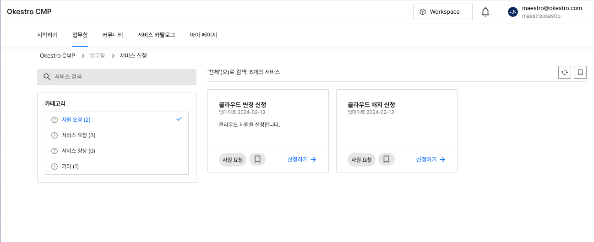

서비스 신청
서비스 신청 조회하기
카테고리별 신청 양식을 통해 필요한 서비스를 요청할 수 있습니다. 업무 패턴에 따라 승인 과정이 포함될 수 있습니다. 주로 이용 되는 서비스 신청은 다음과 같습니다.
- 클라우드 자원 신청
- 자원 변경(쿼터 변경)
- 자원 해지/반납
아래는 서비스 신청 목록 화면입니다.

주의사항
모든 프로젝트에 동일한 서비스 양식이 포함되지 않습니다.
요건에 따라 필요한 서비스 신청 양식만 포함됩니다.
사용팁
사용자에게 권장 사용 방법 혹은 빠른 사용법을 작성합니다.
부가성 정보입니다.
경고
사용자에게 주의가 필요한 경고성 문구를 작성합니다.
시스템에 장애가 발생하지 않습니다.
위험
사용자에게 필요한 강한 경고성 문구를 작성합니다.
시스템에 장애가 발생할 수 있습니다.
명령어- 명령어에 대한 설명명령어- 명령어에 대한 설명명령어- 명령어에 대한 설명
Fenced code blocks are like Standard
Markdown’s regular code blocks, except that
they’re not indented and instead rely on
start and end fence lines to delimit the
code block.
| Head Cell | Head Cell | Head Cell |
|---|---|---|
| Content Cell | Content Cell | Content Cell |
| Content Cell | Content Cell | Content Cell |